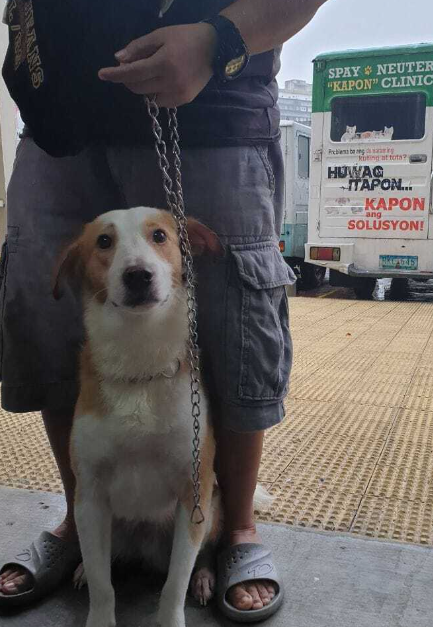
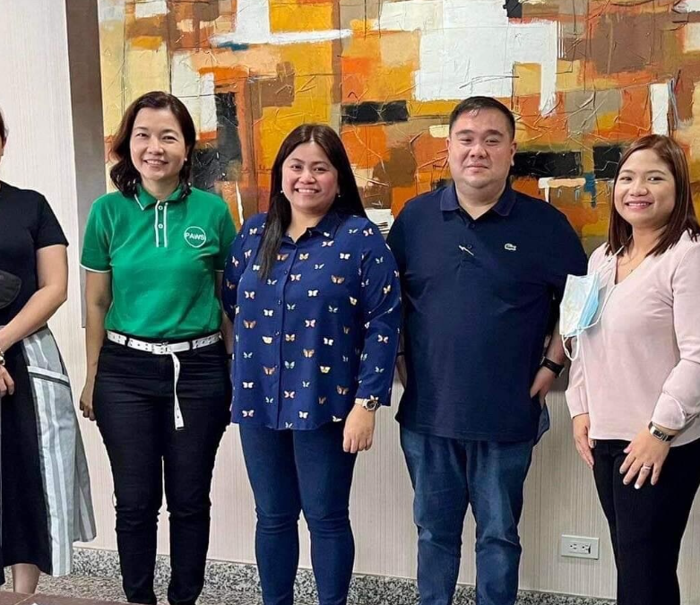

Healthy communities start with
responsible pet care
Kapon for all Pets Program
“Kapon for All Pets” is a joint effort between PAWS and participating LGUs to offer free or affordable spay/neuter services to pet owners in the community. LGUs are encouraged to partner with vet clinics and provide incentives so they can perform a set number of free or low-cost surgeries each month. For example, 20 clinics offering 10 free kapon procedures monthly means 200 pets served.
This LGU-partnered program helps provide free or low-cost kapon through local vet clinics. Request it in your area by contacting your LGU or referring them to PAWS.

